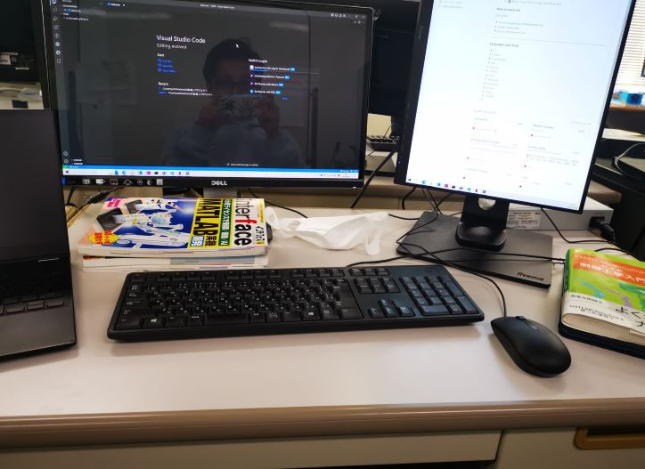

People often focus on the outcome or result of something they are doing,
but what really helps them grow and develop is the experience and learning that happens during the process of doing it.
Recent
About Study
The professor purchased a DJI's educational drone. Recently, I have been working hard on learning multi-agent systems and ROS.
The control of multi-agent systems is a bit difficult because it requires knowledge of linear algebra and graph theory, and for ROS, I spent a lot of time setting up the Linux OS.
In addition, I have been reading some papers on formation.
It is really difficult for me to fully understand them, but I'm skipping over the methods to get a grasp of the objectives and conclusions of the study.
Sometimes I think research is really hard, there's so much knowledge to learn and so many papers waiting to be read.
But I will not give up, keep my belief and courage, and focus on the present moment.
What matters is not the result but the process.
I joined the research Lab that I'm very interested in.
I plan to do research related to UAV formation control in this Lab.
I will also focus on hardware knowledge and look forward to making my own drones!

Studying
Classical Control and Modern Control
MATLAB
LaTex
English
Recent
About Job
I am participating in job-hunting activities and preparing ES.
I attended quite a few company information sessions and employee consultation meetings.
I had three interviews, so I had a good grasp of the interview process.
I'm trying to make a blog (3)
learn JavaScript
In the second week, I tried to read "JavaScriptThe Definitive Guide" by David Flanagan,
but it was not a good book to start with.
I chose "Head First JavaScript Programming" by Eric T. Freeman and Elisabeth Robson as my introduction, and I read about 1/3 of it in one day.
Since I had the experience of learning C and Python, it was easier to understand.
The purpose of learning JavaScript is to easily convert markdown files into html files with the layout I want.
Because most of my notes or articles are markdown files written in obsidian and I want to keep my own blog's layout and customization,
I did not use some existing Static Site Generator. Such as Jekyl, Hexo...
New
Blog updated, home page log, personal introduction, pages for mobile and some notes.
The next step will continue to work on the Archive, CN page, JP page, and other learning notes,
as well as redesign the layout of notes reading after learning JavaScript.
But it's not perfect for me.
Actually, I am facing a problem that I have learned HTML and CSS and created a blog layout and look, but I need a feature that will facilitate me to export the MD file into html.
First of all because I want to keep the look of the blog I created and I may change the look later, so I think using the existing static site builder may not be suitable for me.
So now I'm using some plugins to help me quickly export a large number of MD files into html,
but the problem is that the exported html files don't have the layout and look of my own blog.
So, what should I do? Learning JavaScript or Python about static web page generators and scripts that can help me,
that's my next step.
To-Do
Archive
About me
CN pages
JP pages
Dark theme
I'm trying to make a blog (1)
Why
Last week, I wanted to submit a ES to a company. It's time to start the job search I thought, although it's likely I'll be moving on to a master's program.
But the company asked me to provide a website that shows persenal sikiles, achievements, etc. I just typed my GitHub's URL on it. So this time, I really want to have a blog to help others understand me.
And I also love sharing some of my learning notes.That's why I got start to make this website.
How
At first, after reading some suggestions online, I chose the book "Head First HTML And CSS" by Elisabeth Robson and Eric Freeman.
It took me about 3~4 hours a day for a week, reading, writing code and taking notes at the same time.
After that I found some very nice blogs which have given me a lot of inspiration on design and layout.
I spent a day, mostly on making the navigation bar, even though it was rudimentary.
I hope to finish these pages by the end of next week.
Archive
About me
CN pages
JP pages
In April I will start working on my graduation research.
So, I can't continue learning JavaScript and other knowledge to help me improve this site anytime soon, but I will try to solve about the database in order to share my learning notes.